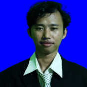

Davi Pratama Yunandar
Mahasiswa Universitas Teknokrat Indonesia
Program Studi Informatika
Tentang Saya
Saya adalah seorang mahasiswa yang memiliki minat besar dalam bidang pengembangan web dan teknologi digital. Fokus utama saya adalah membangun aplikasi berbasis web dengan desain responsif, modern, dan fungsional.
Informasi Kontak
- 📧 Email: davi.pratama@teknokrat.ac.id
- 📱 Telepon: +62 812 3456 7890
- 📍 Alamat: Bandar Lampung, Indonesia